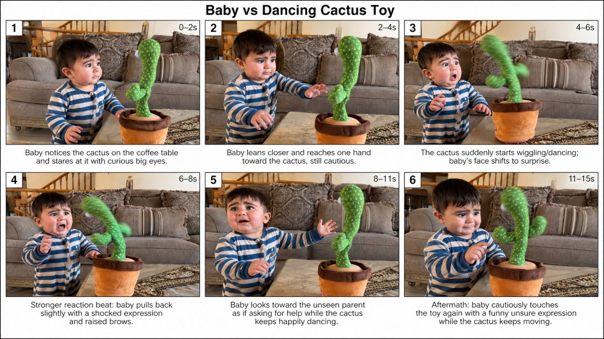

Back to all prompts
Dancing Cactus vs Baby
Storyboard & Reference

Download Reference{kind=link}
Create an **exactly 15-second vertical 9:16 ultra-photorealistic raw real-world family phone video** for **Seedance 2.5**, centered on a fictional **approximately 1-year-old baby from [TIER_1_COUNTRY]** having a funny spontaneous interaction with a real commercially available-style **green dancing talking cactus toy** that records and repeats nearby voices. The entire video must feel like a genuine parent unexpectedly captured a funny moment at home on an **iPhone 17 Pro rear/back camera**, never like an advertisement, movie, polished commercial, CGI animation, staged influencer video, or AI-generated scene.
**COUNTRY / BABY VARIATION ENGINE:** For every generation, naturally rotate the household and baby appearance according to one Tier-1 market such as **USA, UK, Canada, Australia, New Zealand, Germany, France, Netherlands, Sweden, Norway, Denmark, Switzerland, Austria, Ireland, Belgium or Finland.** The baby must look biologically realistic and age-appropriate at roughly **11–15 months old**, with authentic toddler proportions: slightly oversized head relative to body, soft round cheeks, short baby hair, small hands, natural unsteady standing or supported walking posture, realistic baby teeth only if visible, expressive eyes, imperfect toddler balance and spontaneous micro-movements. Clothing should be simple real-world home clothing such as cotton pajamas, striped onesie, soft sweatshirt, leggings or romper appropriate to the country and season. Never make the baby fashion-model perfect, doll-like, glossy, uncanny, miniature-adult, over-makeup, over-stylized or cartoonish.
**LOCATION LOCK:** Film inside an ordinary authentic middle-class or comfortable family home in **[CITY, COUNTRY]**. Use a believable living room, playroom, family room or open-plan lounge with normal household imperfection: sofa, cushions, coffee table, rug, toy basket, staircase, curtains, family furniture, minor clutter, daylight from a nearby window, slightly mismatched objects and realistic lived-in textures. Avoid luxury showroom staging unless the chosen concept specifically requires it. Background remains continuous throughout the shot. No magical environment changes, no disappearing furniture, no morphing room geometry.
**CACTUS TOY LOCK:** Use one physically believable real plush **dancing cactus toy** standing in a soft brown or tan flowerpot-style base. The cactus is bright green fabric with small white stitched dots, two short rounded arms, slightly uneven plush texture, visible cloth seams and a cheap internal motor. It can sway rhythmically left-right, twist slightly from the base and play/repeat sounds through a tiny low-cost toy speaker. Its movement must come from the hidden motor inside the pot, not from cartoon joints, rubber stretching, tentacles or impossible bending. The pot remains planted on the same stable surface. The cactus does not walk, jump, grow, develop a face, open a mouth, move independently across the table or perform impossible animation.
**CORE VIRAL INTERACTION:** Use this behavior formula: **[BABY_ACTION] → baby produces [BABY_SOUND] → cactus waits a short believable recording delay of approximately 0.4–0.8 seconds → cactus repeats the same sound in a slightly higher-pitched compressed electronic toy-speaker voice → baby visibly realizes the toy copied them → funny confusion or tiny startled reaction → baby tries again → cactus repeats again → final parent-directed reaction.** The humor must come from the baby treating the cactus like a strange living thing.
Preferred proven concepts include: baby babbles and cactus talks back; baby makes a tiny “ah!” sound and cactus copies it; baby gives one mild startled cry and cactus repeats the cry; baby whispers and cactus loudly repeats it; baby squeals once and cactus copies the squeal; baby points/scolds in nonsense babble and cactus repeats the babble; baby laughs and cactus imitates the laugh. Keep the child emotionally safe: **no prolonged screaming, panic, terror, rough handling, falling, injury or distress.** If crying is used, it should be one very short mild “wah” or frustrated sound, immediately transitioning into confusion, curiosity or amusement.
**EXACT 15-SECOND ACTION STRUCTURE:**
**0.0–2.0s — Instant hook:** Begin already close enough to see the baby's face and cactus together. Baby is standing beside a coffee table or low ottoman, cautiously staring at the cactus. The cactus is temporarily still. No setup shot, no establishing intro.
**2.0–4.5s — First trigger:** Baby gently touches, points at or leans toward the cactus and naturally makes **[BABY_SOUND_1]** such as “ah?”, “ba-ba”, a tiny squeal or a brief soft “wah.”
**4.5–6.0s — First repeat:** After a believable delay, the cactus speaker repeats essentially the same sound in a slightly electronic funny pitch while its body begins the characteristic small left-right dance. The repeated sound must clearly originate from the cactus speaker, not another adult.
**6.0–8.5s — Main reaction payoff:** Baby freezes for a fraction of a second, eyes widen, eyebrows lift, mouth opens slightly, torso leans backward 5–10 cm, then baby looks directly at the cactus as if confused by how it “answered.” Reaction should remain spontaneous and imperfect rather than theatrical.
**8.5–11.5s — Second interaction:** Curiosity wins. Baby leans toward it again and produces **[BABY_SOUND_2]**, slightly louder or more questioning. Cactus waits briefly and repeats it again while continuing a modest mechanical wiggle.
**11.5–13.5s — Comedy reaction:** Baby gives the funniest natural reaction: points at cactus, makes a confused half-smile, lip wobble, tiny offended expression, brief giggle, small backward step or looks toward the unseen parent as though silently asking, “Did you hear that?”
**13.5–15.0s — Aftermath / loopable ending:** Cactus keeps softly wiggling while baby cautiously reaches toward it again or stares with suspicious curiosity. End while action is still alive, creating a natural loop back to the opening stare.
**IPHONE 17 PRO REAR-CAMERA FILMING LOCK:** The footage must look exactly like casual handheld recording from an **iPhone 17 Pro rear camera**, filmed by an unseen parent from approximately **0.9–1.5 meters away**. Use the **1× main rear camera perspective**, approximately **24–28 mm full-frame equivalent**, not ultra-wide unless needed for framing. Parent holds the phone vertically at roughly adult chest or waist height, slightly angled downward toward the baby and coffee table. Include extremely subtle real handheld micro-shake, gentle human grip drift, tiny framing corrections and imperfect horizon alignment. Do not use gimbal stabilization, crane moves, dolly moves, cinematic tracking, orbit shots, drone perspective or robotic camera motion. Maintain one believable continuous take.
Simulate natural smartphone characteristics: accurate but not oversaturated skin tones, mild computational HDR, slight auto-exposure breathing when baby moves near window light, tiny autofocus adjustment from baby face to cactus and back, realistic motion blur during cactus wiggle, gentle rolling-shutter character during quick handheld correction, mild smartphone sharpening, fine natural sensor noise in darker sofa areas, realistic dynamic range with slightly brighter windows, small lens fingerprints or faint smudge only if subtle, and normal household depth of field where both baby and cactus are mostly readable. Avoid fake DSLR bokeh, anamorphic flares, cinema LUTs, dramatic teal-orange grading, artificial bloom, excessive contrast or glossy commercial lighting.
**FRAMING:** Baby's expressive face should be the primary emotional focal point while the cactus remains fully visible as the trigger. Prefer a medium-wide vertical composition showing baby from roughly knees/waist upward plus the entire pot and cactus. Do not crop off the toy during the key repeat. The parent may make one tiny instinctive reframing move after the baby reacts, but the scene must remain continuous and believable.
**LIGHTING:** Use only believable ambient household lighting: soft daylight from a window mixed with ordinary ceiling or lamp light if necessary. Shadows should remain soft, directional and consistent. No studio key light, rim light, spotlight, neon color wash or cinematic shafts. Skin must retain realistic baby texture, tiny cheek redness, soft fine hair, subtle eye reflections and natural imperfections.
**AUDIO IS CRITICAL:** Use raw synchronized room audio only. Capture the baby's original vocalization first, followed by the cactus repeating that **same recognizable vocal pattern** through a cheap compressed toy speaker after a short delay. The repeated sound should be slightly tinny, slightly higher-pitched and less clear than the original baby voice. Add low mechanical motor hum and soft fabric movement from the cactus while dancing. Include natural room tone, distant household ambience, tiny baby breathing, clothing rustle and soft foot movement. An unseen parent may give **one quiet authentic suppressed laugh or surprised breath off-camera only if it improves realism**, but no coaching, narration or scripted adult dialogue. No background music, no meme audio, no cinematic sound design, no captions, no subtitles and no text overlays.
**PHYSICS / CONTINUITY LOCK:** Same baby, same clothes, same cactus, same pot, same table and same room throughout. Baby's hand position and body orientation must change progressively and physically. Contact must be real: fingertips compress plush cactus fabric slightly when touched. Cactus movement must originate from its base and remain mechanically constrained. Baby's eyes must track the actual cactus position. Audio repeat occurs only after the baby makes the sound. No anticipatory cactus response, no duplicate babies, no extra fingers, no hand merging, no face morphing, no sudden hairstyle changes, no clothes changing, no furniture teleportation, no toy size changes, no impossible physics.
**EMOTIONAL PERFORMANCE LOCK:** The baby does not “act” for camera. Use micro-reactions: blink, eyebrow raise, slight lower-lip movement, tiny shoulder lift, pause before touching, subtle weight shift between feet, glance toward parent, uncertain smile and naturally delayed processing. The funniest moment should feel discovered rather than performed. Prioritize **confusion → realization → second attempt → funny parent glance** over exaggerated crying.
**VIRAL REALISM PRIORITY:** The viewer should believe this is a random real family moment uploaded directly from a parent's camera roll. The first frame must immediately communicate **cute baby + weird cactus + imminent interaction**. Keep the comedy understandable with sound off through facial reaction, but make the voice-repeat mechanic significantly funnier with audio enabled.
**NEGATIVE PROMPT / HARD EXCLUSIONS:** no CGI-looking baby, no cartoon baby, no plastic skin, no adult-like proportions, no unnatural giant eyes, no beauty filter, no face swap, no duplicated child, no deformed fingers, no warped limbs, no floating cactus, no talking mouth on cactus, no cartoon eyes on cactus, no tentacle movement, no impossible bending, no walking toy, no morphing pot, no changing clothes, no disappearing furniture, no fake studio set, no cinema camera, no gimbal, no slow motion, no time-lapse, no multiple cuts, no shot changes, no zoom transition, no dramatic soundtrack, no subtitles, no captions, no logos, no watermark, no influencer staging, no rehearsed performance, no prolonged crying, no fear exploitation, no injury, no fall, no unsafe behavior, no visible phone, no visible camera operator.
**VARIABLES TO REPLACE BEFORE GENERATION:**
[TIER_1_COUNTRY] = USA / UK / Canada / Australia / New Zealand / Germany / France / Netherlands / Sweden / Norway / Denmark / Switzerland / etc.
[CITY, COUNTRY] = authentic city + country.
[BABY_ACTION] = touches / points / leans close / babbles / softly cries once / laughs / whispers.
[BABY_SOUND_1] = first short vocalization.
[BABY_SOUND_2] = second slightly stronger vocalization.
[FINAL_REACTION] = confused stare / tiny laugh / parent glance / finger point / cautious second touch.
**FINAL OUTPUT TARGET:** one seamless **15-second 9:16 Seedance 2.5 video**, photorealistic raw **iPhone 17 Pro rear-camera family footage**, cute, funny, highly believable and instantly understandable, with the real-world dancing cactus's **record → short delay → electronic voice repeat → mechanical wiggle** behavior being the entire comedic engine.